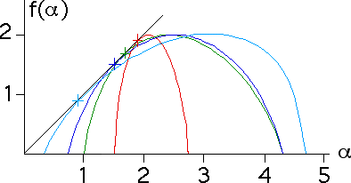

| Take q = 1. Recalling p1 + ... + pN = 1, we see the relation |
| (p1q)(r1tau(q)) + ... + (pNq)(rNtau(q)) = 1 |
| that defines tau(q) implies |
| (p11)(r1tau(1)) + ... + (pN1)(rNtau(1)) = 1 |
| and for each q the defining equation has a unique solution. |
| From the equation f(alpha) = q*alpha + tau(q) we see |
| the graph of f(alpha) intersects the diagonal line. |
| Because |
| Because the graph of f(alpha) is concave down, this is the only point at which the graph of f(alpha) intersects the diagonal line. |
| Here are some examples for several f(alpha) curves. |
|  |
Return to Dimension of the Measure.